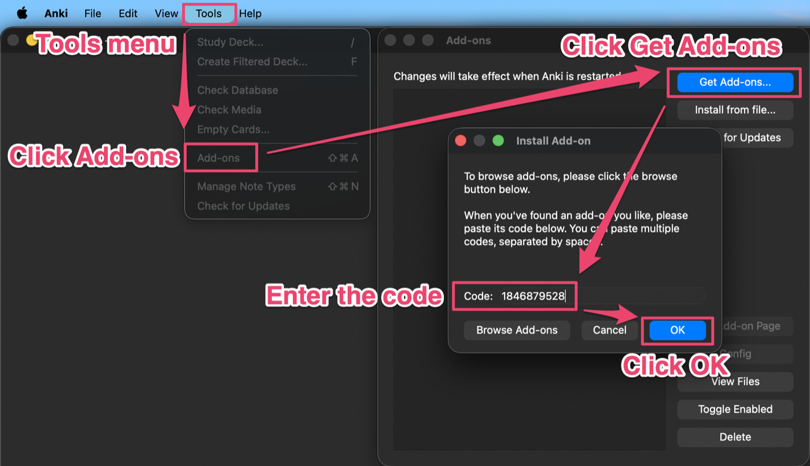

Requires an active Migaku subscription. This add-on is designed for Migaku users who choose Anki as their spaced repetition system.
It connects Migaku and Anki so you can create language-rich cards, edit them during reviews, and manage how they are scheduled—all without replacing the Anki workflow you already know.
Send definitions, images, audio, example sentences, and language syntax from the Migaku Browser Extension.
Display readings, pronunciation, tone, pitch, gender, and parts of speech depending on the language.
Update card fields directly from the reviewer with the in-place editor.
Enable Pass/Fail grading, maintain ease, color grading buttons, and change card types during review.
Balance reviews across the week, plan vacations, and configure card retirement or promotion.
Convert imported audio to MP3, normalize volume, and export condensed audio.
🇭🇰 Cantonese, 🇨🇳 🇹🇼 Chinese (Simplified and Traditional), 🇺🇸 English, 🇫🇷 French, 🇩🇪 German, 🇮🇹 Italian, 🇯🇵 Japanese, 🇰🇷 Korean, 🇧🇷 Portuguese, 🇪🇸 Spanish, 🇻🇳 Vietnamese.
